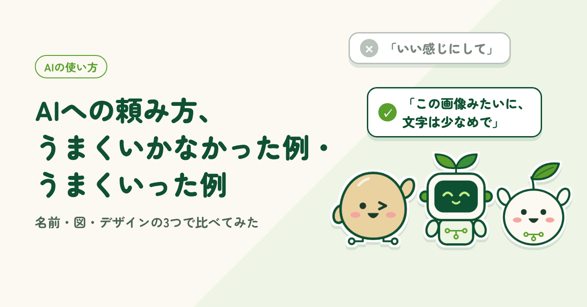
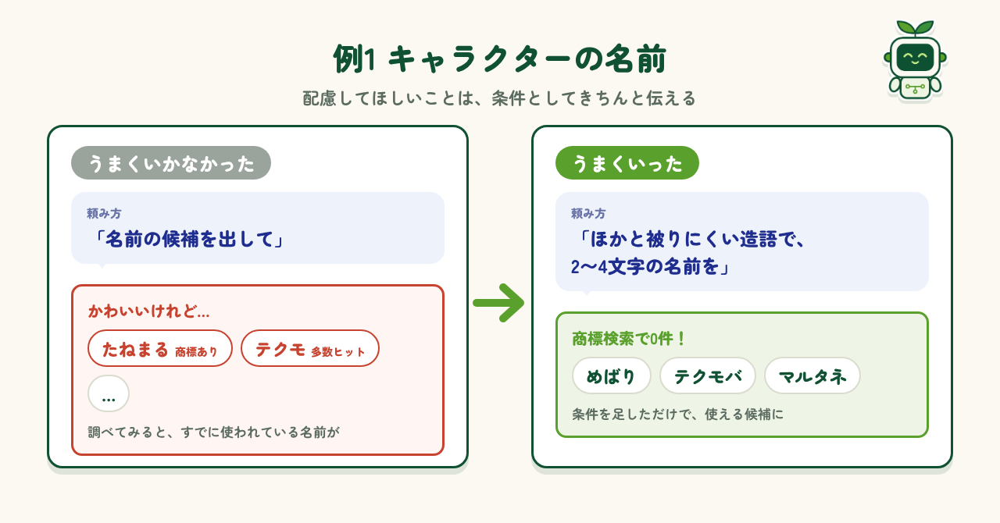
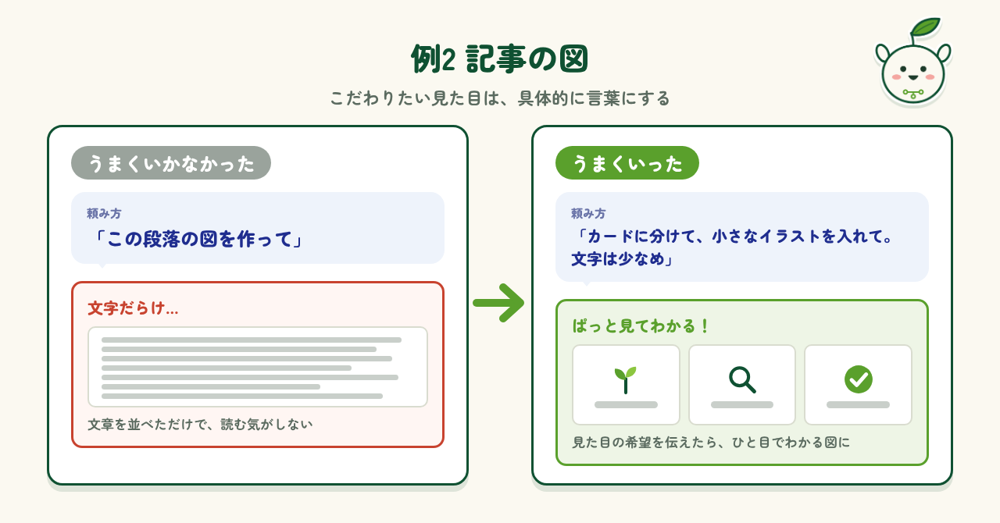
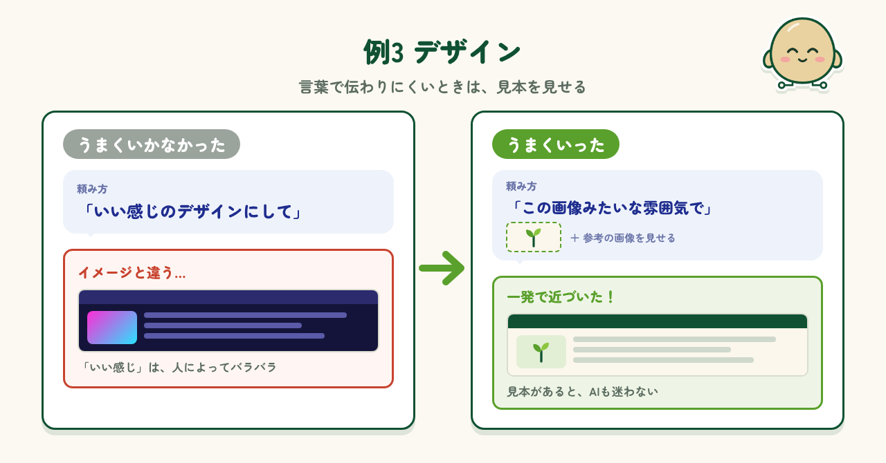
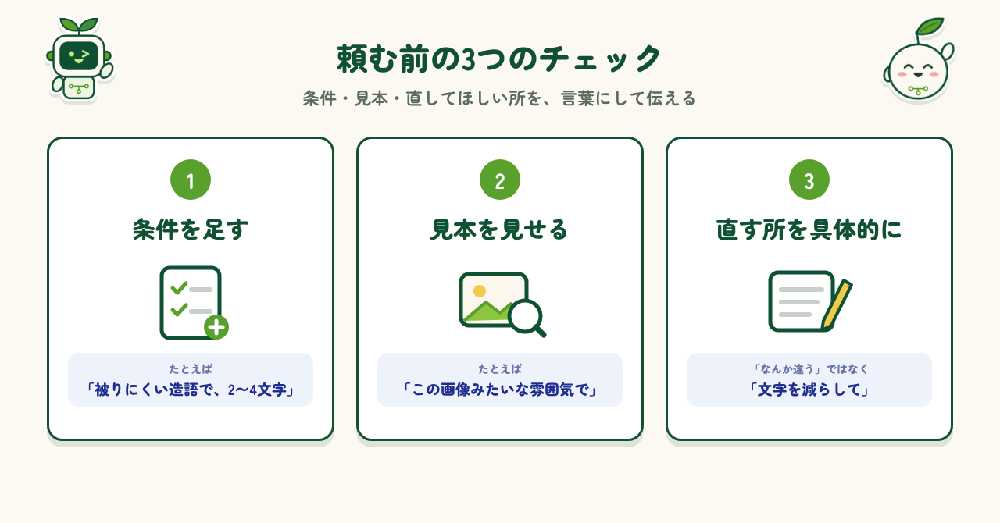

2026.11.04 公開
AIへの頼み方、うまくいかなかった例・うまくいった例
AIから思ったような答えが返ってこなかったとき、頼み方をどう変えたか。名前・図・デザインの3つの実例で比べます。

はじめに
AIを使い始めたころ、「思っていたのと違う答えが返ってくるなあ」と感じることがよくありました。でも、うまくいかなかったときの頼み方を見直してみると、原因はAIではなく、私の伝え方にあることがほとんどでした。同じAIでも、頼み方しだいで返ってくるものは大きく変わります。この記事では、私が実際に経験した「うまくいかなかった頼み方」と「うまくいった頼み方」を、3つの例で比べてみます。ちょっとした言い方の違いで、結果がぐっと良くなりますよ。
例1 キャラクターの名前
1つ目は、キャラクターの名前を考えてもらったときのことです。最初は「名前の候補を出して」とだけ頼みました。かわいい候補をたくさん出してくれたものの、調べてみると、すでに商標登録されている名前が混ざっていました。そこで、「ほかと被りにくい造語で、2〜4文字」と条件を足して頼み直すと、問題のない候補が出てきました。AIはいい案を出してくれますが、商標のように配慮してほしいことは、こちらからきちんと伝えるべきだと感じました。

例2 記事の図
2つ目は、記事に入れる図を作ってもらったときのことです。最初は段落の文章を渡して、「この段落の図を作って」とだけ頼みました。できあがったのは、文章をそのまま並べたような文字だらけの図で、とても読む気になれません。そこで、「カードに分けて、それぞれに小さなイラストを入れて。文字は少なめに」と見た目の希望を具体的に伝えると、ぱっと見てわかる図になりました。名前のときと同じで、こだわりたいところは、きちんと言葉にして伝えるべきだと感じました。

例3 デザイン
3つ目は、デザインを考えてもらったときのことです。最初は「いい感じのデザインにして」と言葉だけで頼みました。出てきたのは派手な色づかいのデザインで、私のイメージとはかなり違いました。「いい感じ」の中身は、人によってバラバラなんですよね。そこで、参考にしたい雰囲気の画像を見せて「この画像みたいな雰囲気で」と頼むと、一発でイメージに近いものが出てきました。デザインも、指示の仕方ひとつで出来上がりの質がぐっと上がることを実感しました。

うまくいく頼み方のコツ
3つの例からわかったコツを、頼む前のチェックとしてまとめておきます。1つ目は「条件を足す」。避けたいことや文字数など、こちらの事情は言わないとAIには伝わりません。2つ目は「見本を見せる」。言葉で説明しにくいときは、画像や例を見せるのが近道です。3つ目は「直してほしい所を具体的に」。一度でうまくいかなくても、「なんか違う」ではなく「文字を減らして」「色を明るく」のように伝えると、2回目の答えがぐっと良くなります。

まとめ
AIは、頼めばすぐにたくさんの案を出してくれる心強い相棒です。ただ、こちらが何を大事にしているかまでは、言わなければわかりません。名前・図・デザインの3つの例を振り返ると、うまくいかなかったときの多くは、頼み方を少し変えるだけで解決しました。最初から完璧な頼み方をしなくても大丈夫です。返ってきた答えを見て、条件を足したり見本を見せたりしながら、やり取りの中で少しずつ近づけていけば、思っていた以上のものができあがりますよ。
制作メモ
段落の構成と文章の下書きはAI（Claude）と作り、各段落に自分の感想を入れて、1段落ずつ確認・修正しました。図もAIと一緒に作っています。